Clustering algorithms never see your variables: they see a matrix of dissimilarities between pairs of objects. How that matrix is computed is the most consequential decision of the whole analysis, more so than the choice of algorithm. This block offers 39 coefficients in six families, diagnoses the matrix they produce, draws it in four ways and lets you compare candidates before you commit.
Block 3 has three cards: 1 · Choose the coefficient, where you choose the family and the coefficient and compute it; 2 · The dissimilarity matrix, with the diagnosis, the neighbours table and five figures; and 3 · Compare candidate coefficients, which measures how much the matrix changes when you change the coefficient. At the top, the theory card summarises in three lessons what this chapter explains at length. The block becomes available once Block 2 has built the working matrix, and everything that follows (trees, partitions, validation) is computed from the matrix you produce here.
These three words are often confused, and it is worth pinning them down now, because the app uses them precisely.
Two sites with twenty species each may be “similar” because they share many species, because their abundances are proportional, or because both lack the same fifty species of the region. Each coefficient decides which of these things counts, and by how much. The clustering algorithm merely rearranges the numbers it receives: if the matrix says two sites are close, any method will put them together. Switching from UPGMA to Ward moves a few objects; switching from Euclidean to Bray–Curtis can change the very meaning of “cluster”. That is why this block comes before the clustering blocks, and why it includes a tool for comparing coefficients.
The first card shows the recommendation that Block 2 derived from the data profile, the coefficient families available for your table, the chosen coefficient with its formula and parameters, and the compute button (figure 4.1).
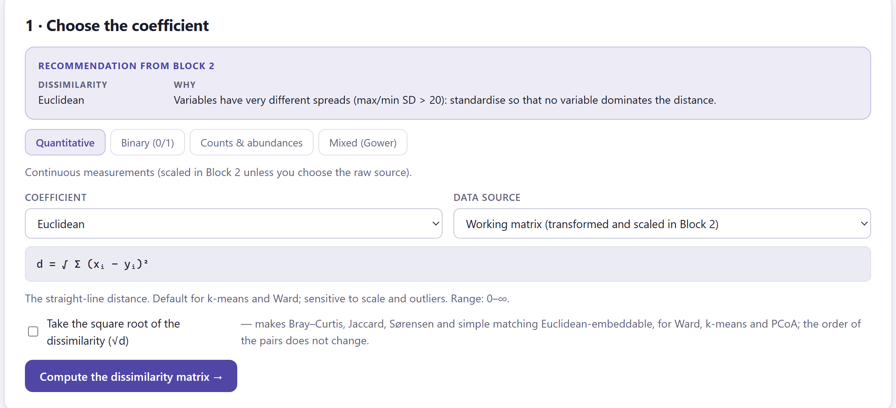
1 2 3 4 5 7 6The catalogue is organised into six families that correspond to the data types of Block 2. Table 4.1 tells you which family to use and which to avoid; table 4.2, where each family takes its data from; table 4.3 lists the coefficients with their formula and use. All the formulas are also shown in the app when you select a coefficient.
| Data | Use | Avoid |
|---|---|---|
| Quantitative with comparable units (scaled) | Euclidean, Manhattan; Mahalanobis if the variables are correlated; Euclidean on principal components to remove noise | Correlation distances with fewer than about 5 variables |
| Profiles: expression, spectra, series | 1 − Pearson, 1 − Spearman, cosine | Euclidean when only the shape matters |
| Presence/absence where 0 = absent | Jaccard, Dice, Ochiai, Kulczynski | Simple matching (rewards shared absences) |
| Binary with two informative states | Simple matching, Rogers and Tanimoto | Jaccard (ignores one of the states) |
| Abundances, counts | Bray–Curtis, Ružička, Morisita–Horn; Hellinger or chord if you need Euclidean geometry | Raw Euclidean (dominated by abundant species and double zeros) |
| Nominal / ordinal | Simple matching of categories, ranks for ordinal variables, Gower | Treating category codes as numbers |
| Mixed types | Gower (optional weights) | Indicators + Euclidean, except with few categories |
| Family (tab) | Data used | Appears when… |
|---|---|---|
| Quantitative | The numeric columns of the working matrix (quantitative, counts and ordinal as ranks; not binary variables or indicators), or the same variables in raw form if you choose Raw numeric variables. | there is at least one active numeric variable. |
| Binary (0/1) | The active binary variables. If there are none, the non-negative numeric variables coded as presence (x > 0 → 1); the app says so in the note on the result. | there are binary or non-negative numeric variables. |
| Nominal / ordinal | Nominal variables (by category match), declared binary variables and ordinal variables (by ranks). Quantitative variables are ignored. | there is at least one nominal, ordinal or binary variable. |
| Counts & abundances | The raw non-negative numeric variables (without the transformation or scaling of Block 2): each ecological coefficient applies its own standardisation. | there are at least two numeric variables with no negative values. |
| Mixed (Gower) | All the active variables, each with the dissimilarity appropriate to its type; or the full working matrix for the Euclidean variant. | always. |
| Supplied matrix | The distance matrix you loaded, as is, square-rooted or squared. | the input was a matrix (in which case it is the only tab). |
For two objects with p binary variables, four quantities are counted: a, the variables in which both have 1; b, those in which only the first has 1; c, those in which only the second does; and d, those in which both have 0. Every binary coefficient is a combination of a, b, c and d (figure 4.2). The key decision is what to do with d, the shared absences: Jaccard, Dice, Ochiai and Kulczynski ignore them (asymmetric coefficients), because the fact that two sites both lack a species does not make them alike; simple matching and Rogers and Tanimoto count them as matches (symmetric), which is correct when 0 and 1 are two equally informative states, such as male/female or allele A/B.
| Coefficient | Formula | Range | When to use it |
|---|---|---|---|
| Quantitative · quantitative data | |||
| Euclidean | d = √Σ(xᵢ − yᵢ)² | 0–∞ | The straight line. The default for k-means and Ward; sensitive to scale and outliers. |
| Squared Euclidean | d = Σ(xᵢ − yᵢ)² | 0–∞ | What Ward and k-means minimise internally; exaggerates large differences. |
| Manhattan (city block) | d = Σ|xᵢ − yᵢ| | 0–∞ | Sum of absolute differences; a single extreme variable has less influence. |
| Minkowski (order p) | d = (Σ|xᵢ − yᵢ|ᵖ)^(1/p) | 0–∞ | p = 1 Manhattan, p = 2 Euclidean, large p → Chebyshev. |
| Chebyshev (maximum) | d = max|xᵢ − yᵢ| | 0–∞ | Only the largest difference counts. |
| Canberra | d = Σ|xᵢ − yᵢ| / (|xᵢ| + |yᵢ|) | 0–p | Differences relative to magnitude; for positive, skewed data. Terms with xᵢ = yᵢ = 0 are omitted. |
| Mahalanobis | d = √(x − y)ᵀ S⁻¹(x − y) | 0–∞ | Euclidean after removing the correlations between variables (computed via principal components). |
| Euclidean on principal components | d = √Σₖ(PCₖ(x) − PCₖ(y))² | 0–∞ | Keeps the first k components: removes noise and redundancy before clustering. |
| Pearson correlation distance | d = 1 − r(x, y) | 0–2 | Two objects are alike when their profiles rise and fall together, whatever their level. Standard for gene expression. |
| Absolute Pearson distance | d = 1 − |r(x, y)| | 0–1 | Opposite profiles also count as alike. |
| Spearman correlation distance | d = 1 − ρ(x, y) | 0–2 | Profile likeness based on ranks; robust to outliers and to monotonic transformations. |
| Kendall correlation distance | d = 1 − τ(x, y) | 0–2 | Based on concordant and discordant pairs of variables. |
| Cosine distance | d = 1 − x·y / (‖x‖ ‖y‖) | 0–2 | The angle between the profiles; ignores their length. |
| Binary (0/1) · binary data (a, b, c, d as in figure 4.2) | |||
| Jaccard | s = a / (a + b + c) | 0–1 | Asymmetric: shared absences do not count. The default for species and markers. |
| Dice / Sørensen | s = 2a / (2a + b + c) | 0–1 | Asymmetric; gives double weight to shared presences. |
| Simple matching | s = (a + d) / (a + b + c + d) | 0–1 | Symmetric: 0 and 1 equally informative (male/female, allele A/B). |
| Rogers & Tanimoto | s = (a + d) / (a + d + 2(b + c)) | 0–1 | Symmetric; mismatches weigh double. |
| Sokal & Sneath (asymmetric) | s = a / (a + 2(b + c)) | 0–1 | Asymmetric; mismatches weigh double. |
| Russell & Rao | s = a / (a + b + c + d) | 0–1 | Shared presences over all variables; absences reduce similarity. |
| Ochiai | s = a / √((a + b)(a + c)) | 0–1 | The cosine similarity for binary data. |
| Kulczynski | s = ½ [a/(a + b) + a/(a + c)] | 0–1 | Mean of the two conditional proportions of shared presences. |
| Hamming (mismatches) | d = b + c | 0–p | Number of variables in which the two objects differ. |
| Yule | d = (1 − Q)/2, Q = (ad − bc)/(ad + bc) | 0–1 | Association-based; 0.5 means independence. |
| Nominal / ordinal · categorical data | |||
| Simple matching (categories) | d = variables with different categories / p | 0–1 | Proportion of non-matching categories, over the nominal (and binary) variables. |
| Manhattan on normalised ranks | d = Σ|rank(xᵢ) − rank(yᵢ)| / (kᵢ − 1) / p | 0–1 | Ordinal variables compared by rank, each rescaled to 0–1. |
| Gower (categorical + ordinal) | d = mean of the 0–1 dissimilarity of each type | 0–1 | Simple matching for nominal variables, rank difference for ordinal ones, Jaccard-style for binary ones. |
| Counts & abundances · ecological data (X, Y = totals of each object) | |||
| Bray–Curtis | d = Σ|xᵢ − yᵢ| / Σ(xᵢ + yᵢ) | 0–1 | The workhorse for community tables; ignores double zeros; 1 = no species in common. Not Euclidean (use √d for Ward). |
| Ružička (quantitative Jaccard) | d = 1 − Σmin(xᵢ, yᵢ) / Σmax(xᵢ, yᵢ) | 0–1 | Jaccard generalised to abundances. |
| Kulczynski (quantitative) | d = 1 − ½ [Σmin/X + Σmin/Y] | 0–1 | Less sensitive than Bray–Curtis to differences in total abundance. |
| Morisita–Horn | d = 1 − 2Σxᵢyᵢ / [(Σxᵢ²/X² + Σyᵢ²/Y²) X Y] | 0–1 | Almost independent of sample size; emphasises the dominant species. |
| Hellinger distance | d = √Σ(√(xᵢ/X) − √(yᵢ/Y))² | 0–√2 | Euclidean distance between square roots of relative abundances; suitable for Ward, k-means and PCA. |
| Chord distance | d = √Σ(xᵢ/‖x‖ − yᵢ/‖y‖)² | 0–√2 | Euclidean distance between profiles rescaled to unit length. |
| Chi-square distance | d = √(Σ₊₊) · √Σⱼ(1/cⱼ)(xⱼ/X − yⱼ/Y)² | 0–∞ | The distance of correspondence analysis; rare species weigh more. |
| Canberra (abundances) | d = Σ|xᵢ − yᵢ| / (xᵢ + yᵢ), over species present in at least one object | 0–p | Every species weighs the same, whatever its abundance. |
| Jaccard on presence/absence | s = a / (a + b + c) after coding x > 0 as 1 | 0–1 | Discards abundances and keeps only composition. |
| Mixed (Gower) · mixed types | |||
| Gower | d = Σₖwₖdₖ / Σₖwₖ; dₖ = |x − y|/range (quantitative, ordinal ranks), mismatch (nominal), Jaccard-style (binary) | 0–1 | Each variable contributes 0–1; quantitative variables are scaled by their range internally, so the scaling of Block 2 has no effect here. |
| Euclidean on the working matrix | d = √Σ(xᵢ − yᵢ)² over scaled columns and indicators | 0–∞ | The quick alternative: categories become 0/1 columns with weight 1/√2. Less well founded than Gower. |
| Supplied matrix · loaded matrix | |||
| As supplied | d = D | — | Your matrix, unchanged. |
| Square root | d = √D | 0–√max | Makes many non-Euclidean dissimilarities Euclidean (Bray–Curtis, Jaccard), which benefits Ward and PCoA. |
| Squared | d = D² | 0–max² | When your matrix holds square-rooted distances and you need the original scale. |
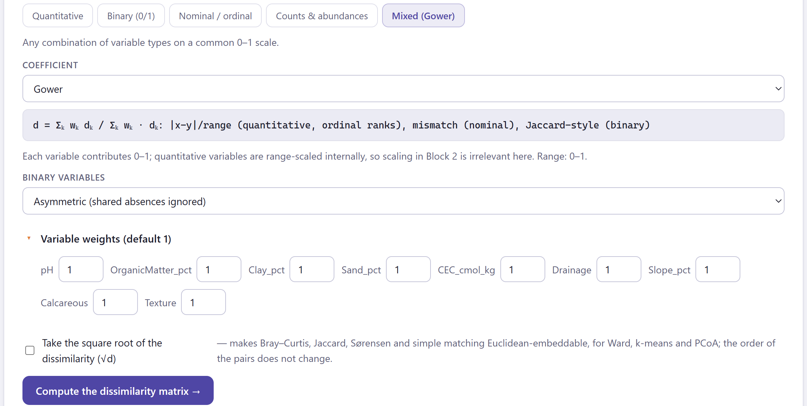
A weight of 2 on a variable makes it count twice; a weight of 0 removes it from the calculation without changing its role in Block 2. This is the clean way to give more importance to a decisive measurement (for example, texture in soil profiles) or to test how much the matrix changes without a doubtful variable. If you use weights, report them in the methods: the automatic paragraph in Block 8 includes them.
Not all dissimilarities behave like distances on a map. Two properties determine which methods you can apply without distortion, and the app checks both on every matrix.
A dissimilarity is metric when it satisfies the triangle inequality: for any three objects, d(x, z) ≤ d(x, y) + d(y, z). This is what you expect of a real distance: going from x to z via y cannot be shorter than going directly. It is Euclidean (more precisely, Euclidean-embeddable) when the objects can be placed as points in some Euclidean space so that the distances between the points reproduce all the d exactly. Every Euclidean dissimilarity is metric; the converse does not always hold.
This matters because Ward, k-means on coordinates and principal coordinates analysis (PCoA, the map in this block) assume Euclidean geometry. On a non-Euclidean matrix they still run, but they distort: the PCoA percentages no longer add up properly, negative eigenvalues appear and Ward may merge clusters in a strange order. The usual remedy is to take the square root of the dissimilarity: √d is Euclidean for Bray–Curtis, Jaccard, Sørensen and simple matching. Single, complete and average linkage and PAM, on the other hand, need only the matrix: any dissimilarity, metric or not, will do.
The app checks both properties when it computes the matrix:
| If the matrix… | then |
|---|---|
| is Euclidean (negative mass < 1%) | Anything goes: Ward, k-means on the PCoA axes, PCoA percentages. |
| is nearly Euclidean (1–10%) | Ward and PCoA are acceptable; the percentages are approximate. |
| is not Euclidean (≥ 10%) | Prefer UPGMA, complete linkage or PAM. If you want Ward or k-means, tick Take the square root of the dissimilarity (√d) on card 1 and recompute (with a loaded matrix, choose Square root on the Supplied matrix tab). |
| is not metric (violates the triangle inequality) | Hierarchical methods work (centroid and median linkage may show inversions); k-means needs coordinates: use PAM or a PCoA. |
When you click Compute the dissimilarity matrix →, the second card appears (figure 4.4): seven summary boxes, a list of interpreted checks, the table of each object’s three nearest neighbours and the figures described in section 4.6.
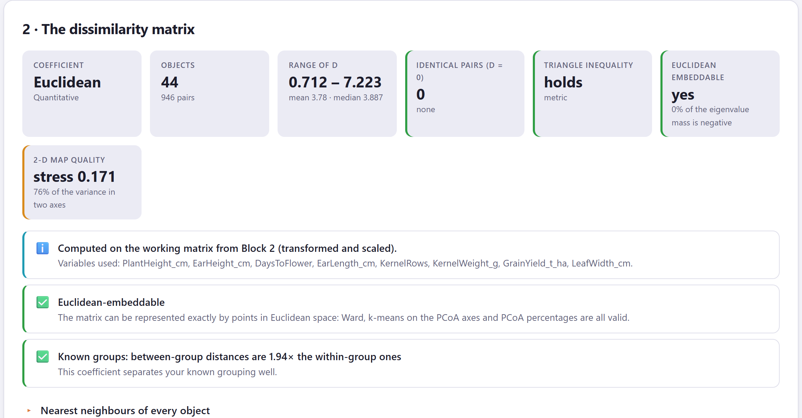
1 2 3| Box | What it is | Traffic light |
|---|---|---|
| Coefficient | The coefficient and its parameter (order p, components kept, type of binary variables in Gower). | — |
| Objects | Objects and number of pairs, n(n − 1)/2. | — |
| Range of d | Minimum, maximum, mean and median of the dissimilarities. | — |
| Identical pairs (d = 0) | Pairs of objects at zero distance: duplicates or ties. | amber if they exceed 5% of the objects |
| Triangle inequality | holds (metric) or the percentage of triples that violate it. | green if it holds, amber if not |
| Euclidean embeddable | yes, nearly or no, with the percentage of negative mass. | green < 1% · amber 1–10% · red ≥ 10% |
| 2-D map quality | The stress of the PCoA map and the variance captured by its two axes. | green < 0.1 · amber 0.1–0.2 · red ≥ 0.2 |
| Check | Level | What it suggests |
|---|---|---|
| Computed on… / Variables used | ℹ️ | Which data the matrix came from (working matrix, raw variables, binary variables, counts, the loaded matrix) and which variables were included. Check it: it is easy to compute an ecological coefficient on variables that are not counts. |
| N pairs of objects at distance 0 | ℹ️ ⚠️ | Names the identical pairs. They will always be merged first; with many ties the order of the dendrogram becomes arbitrary. |
| The coefficient is not a metric | ⚠️ | Percentage of triples that violate the triangle inequality, and which methods to avoid (rule in section 4.3). |
| Euclidean-embeddable / Nearly Euclidean / Not Euclidean-embeddable | ✅ ℹ️ ⚠️ | According to the negative mass; the red warning suggests the square root. |
| The 2-D map is a poor summary | ⚠️ | Stress ≥ 0.2: distant pairs are poorly placed on the plane. Judge similarity from the heat map and the tree, not from the map. |
| Wide spread of dissimilarities | ℹ️ | Coefficient of variation of the dissimilarities > 0.45: some pairs are much closer than others, a good sign. Look for two peaks in the distribution figure. |
| All pairs are about equally dissimilar | ⚠️ | Coefficient of variation < 0.15: the objects are evenly spread, which happens with many dimensions or with no structure. Clusters will be fragile. |
| Known groups: between-group distances are N× the within-group ones | ✅ ℹ️ ⚠️ | Ratio of the mean dissimilarity between known groups to that within them: > 1.5, the coefficient separates the grouping well; 1.1–1.5, modestly; below that, it barely distinguishes it: try another one in the comparison. |
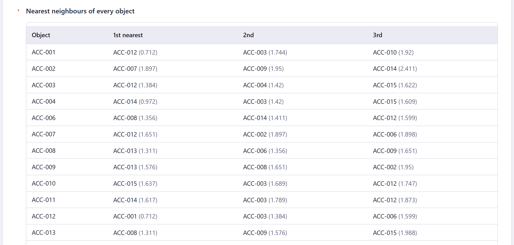
How much does the choice matter for your data? The third card answers with numbers: tick several coefficients, and the app recomputes each matrix and correlates their pairwise dissimilarities. If all the matrices say the same thing, the choice is harmless; if not, your clusters depend on it and you should say so in your paper.
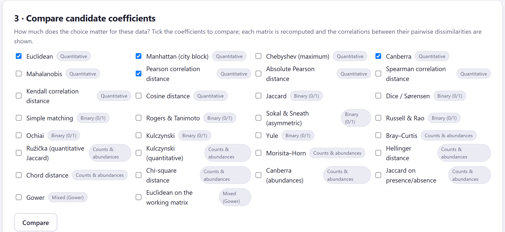
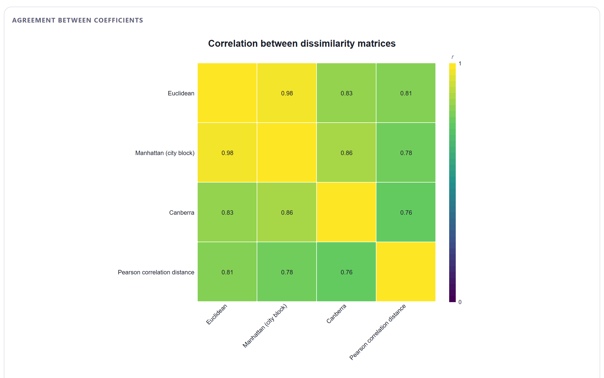
| Minimum correlation | App message and consequence |
|---|---|
| > 0.90 | All the coefficients agree closely: the choice matters little; the clusters should be stable across coefficients. |
| 0.70–0.90 | The coefficients agree moderately: expect some objects to change cluster depending on the coefficient; choose on theoretical grounds (data type, double zeros, scale) and check stability in Block 6. |
| < 0.70 | The coefficients disagree substantially: your clusters depend on this decision. Prefer the coefficient that matches the data type and the question, and report the comparison. |
Besides the paragraph and the figure, the table Pearson correlation between the pairwise dissimilarities of each coefficient repeats the correlations and, if there is a known grouping, adds the column Between / within (known groups): the ratio of between-group to within-group distances for each coefficient. The paragraph names the one with the highest ratio. This is a hint, not a verdict: a high ratio says that the coefficient separates your known groups, which are not always the clusters you want to discover.
The comparison measures agreement, not correctness. Four coefficients can agree on an inappropriate result if they all ignore what matters (for example, four Euclidean-type coefficients on untransformed abundances). Choose first according to the nature of the data (table 4.1) and use the comparison to judge how much caution to apply when interpreting and what to report. And remember that the comparison is made with the current parameters (data source, p, Gower weights).
The block produces five figures of the matrix and a sixth for the comparison, all editable and exportable like those of Block 2 (table 4.7). The first four are read together: the heat map shows the whole matrix, the PCoA summarises it on a plane, the Shepard diagram tells you how far that plane can be trusted, and the distribution tells you whether close and distant pairs are clearly separated.
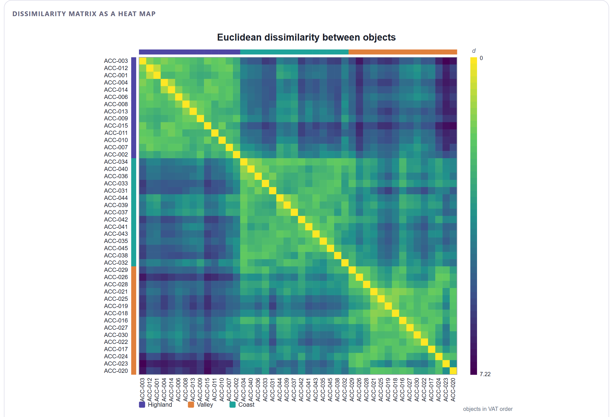
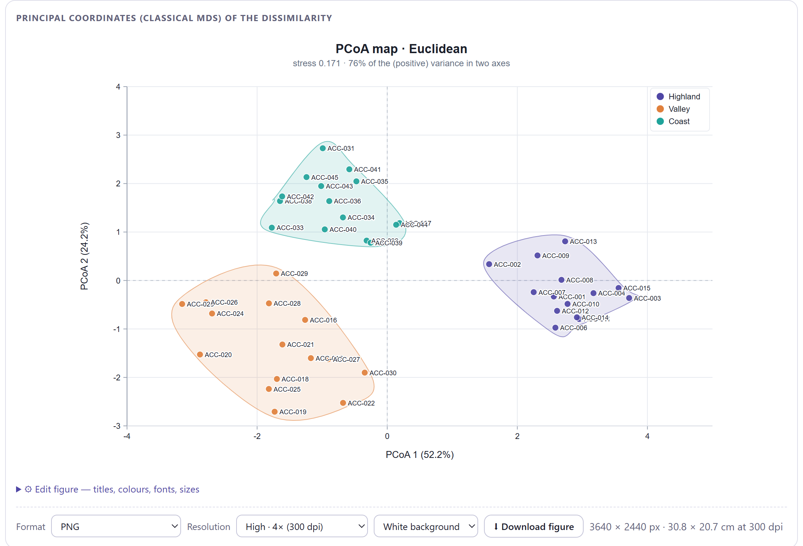
| Stress | Reading |
|---|---|
| < 0.10 | The map reproduces the distances well: you can reason from it. |
| 0.10–0.20 | Acceptable representation; read distant pairs with caution and confirm on the heat map. |
| ≥ 0.20 | Poor two-dimensional representation: trust the matrix (heat map, neighbours table, tree), not the map. |
Stress is computed after linearly rescaling the map distances, because classical PCoA always shrinks them slightly; this way it measures only the distortion, not that harmless shrinkage.
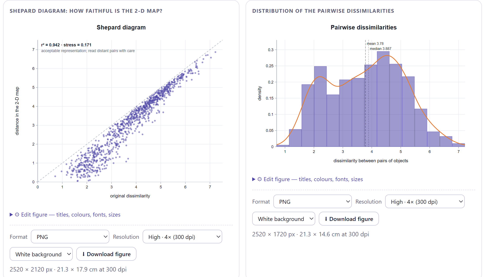
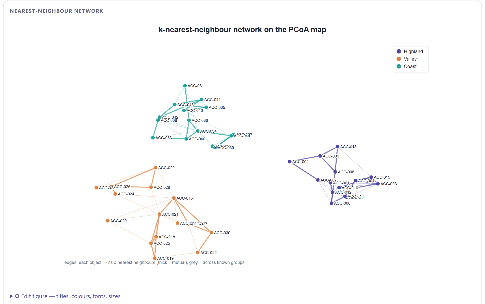
| Figure | What it shows | Specific controls |
|---|---|---|
| Dissimilarity matrix as a heat map | The full matrix as an image (figure 4.8). | Object order (VAT, UPGMA tree order, by known grouping, table order), Colour map, Dark = similar, Show values (n ≤ 18), labels, Known-group strips, palette and legend. |
| Principal coordinates (classical MDS) | The PCoA map (figure 4.9). | Titles and axes, labels and their size, point size and shape, Convex hulls per group, colour without groups, palette and legend. |
| Shepard diagram | Faithfulness of the map (figure 4.10, left). | Title, point colour, palette. |
| Distribution of the pairwise dissimilarities | Histogram and density of the dissimilarities (figure 4.10, right). | Title, Bins (0 = automatic), bar and curve colour, palette. |
| Nearest-neighbour network | Network of k neighbours on the PCoA (figure 4.11). | Title, Neighbours (k) from 1 to 10, labels, point size, colour of between-group edges, palette and legend. |
| Agreement between coefficients | Correlations between coefficients (figure 4.7). | Title, Use Spearman (rank) correlation, Colour map. |
⬇ Download the matrix (CSV) saves the full matrix with the object labels in the first row and the first column, to six decimal places. That file can be loaded back into Block 2 as a distance matrix, or taken to another program. The Block 8 report includes the boxes, the checks, the neighbours table and the figures as you edited them.
With each example from Block 2 already applied with its proposed values, Block 3 proposes a coefficient and ticks a few candidates for comparison in advance. Table 4.8 summarises what you will obtain; the exercises that follow dwell on what each case teaches.
| Example | Coefficient | Pairs | Euclidean (negative mass) | Stress | Between / within | Comparison: minimum r |
|---|---|---|---|---|---|---|
| Maize landraces | Euclidean | 946 | yes (0%) | 0.171 | 1.94 | 0.76 (Canberra vs Pearson): moderate agreement |
| Species presence | Jaccard | 435 | nearly (4.7%) | 0.279 | 1.60 | 0.94 (Dice vs simple matching): close agreement |
| Insect abundance | Bray–Curtis | 276 | nearly (4.1%) | 0.230 | 1.89 | 0.96 (Ružička vs Morisita–Horn): close agreement |
| Soil profiles | Gower | 630 | nearly (5.1%) | 0.129 | — | 0.98 (Gower vs Euclidean with indicators) |
| Distance matrix | As supplied | 66 | nearly (7.2%) | 0.185 | — | 1.00 (as supplied vs square root) |
| Four simulated clusters | Euclidean | 3,160 | yes (0%) | 0.070 | 4.18 | 0.90 (Euclidean vs Canberra): moderate agreement |
| Uniform noise | Euclidean | 1,770 | yes (0%) | 0.319 | — | 0.56 (Euclidean vs Canberra): substantial disagreement |
Euclidean and Manhattan are almost indistinguishable (r = 0.98): with standardised variables and no outliers, choosing between them is a matter of taste. The Pearson correlation distance is a different matter: it compares the shape of each accession’s profile (tall but with a short ear, for example) and ignores its overall level, and even so it separates the regions better (ratio 2.62 versus 1.94). With only eight variables the correlation between profiles is noisy, so the Euclidean distance remains the sensible choice; but the comparison tells you that if a reviewer asked for a “correlation distance”, the clusters would change only in part (r = 0.81 with the Euclidean distance).
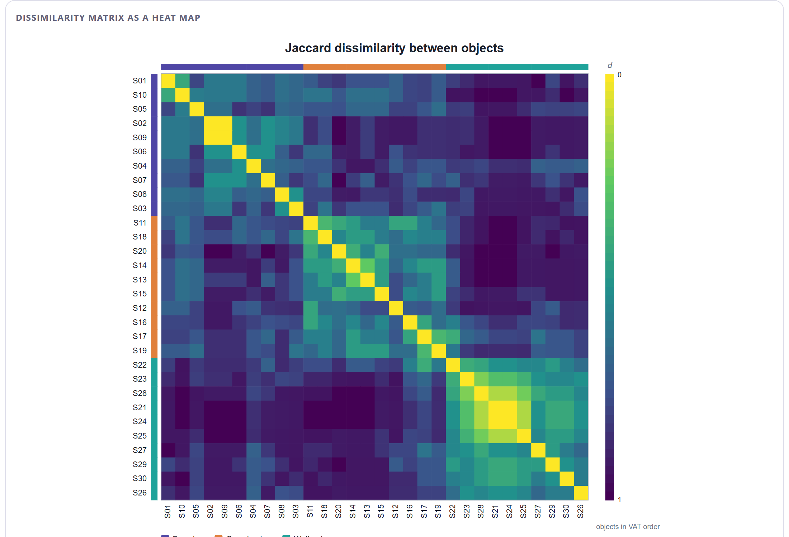
The fact that Jaccard and simple matching correlate at 0.94 here does not contradict the double-zero theory: this table has 22 species and few shared absences between sites from different habitats. With a regional table of 200 species, in which each site has 15, simple matching would declare all sites alike (they share 170 absences) and the correlation would drop. The rule still stands: for species presence/absence, use asymmetric coefficients. And high stress (0.279) is normal with binary data: the dissimilarities take few distinct values and a plane cannot reproduce them; read the heat map and, in Block 4, the tree.
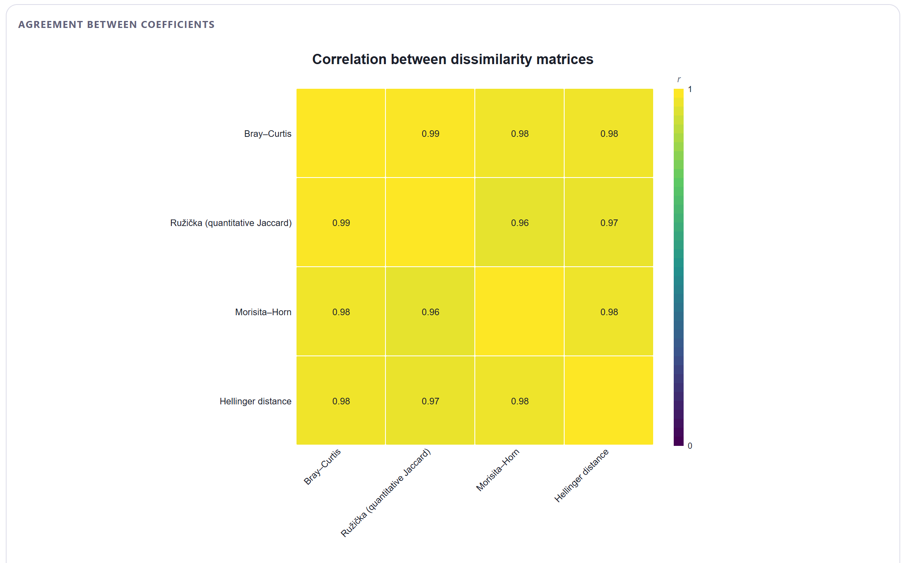
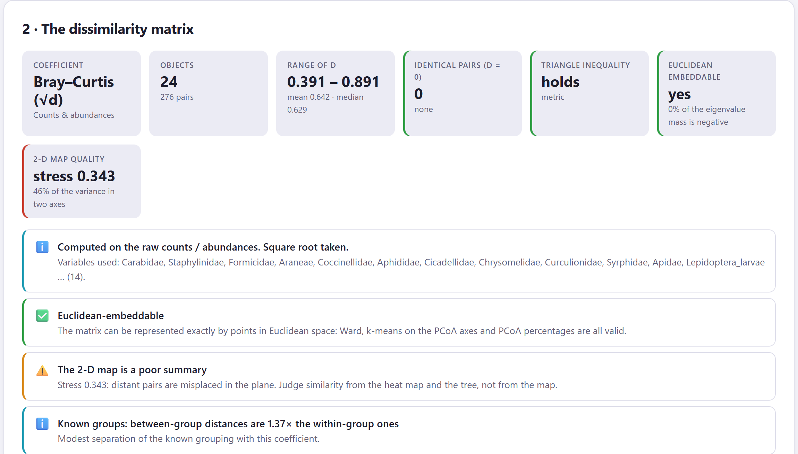
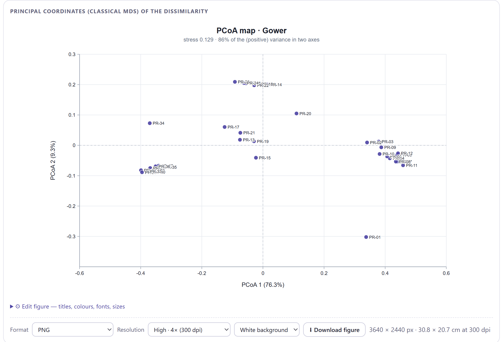
Try it yourself: open Variable weights, set Texture to 3 and compute again. The stress and the clouds change little, but the neighbours table reorganises itself by texture. Then try Binary variables = Symmetric: with a single binary variable (calcareous yes/no) the effect is small, but with a battery of markers absent from most profiles it would be large.
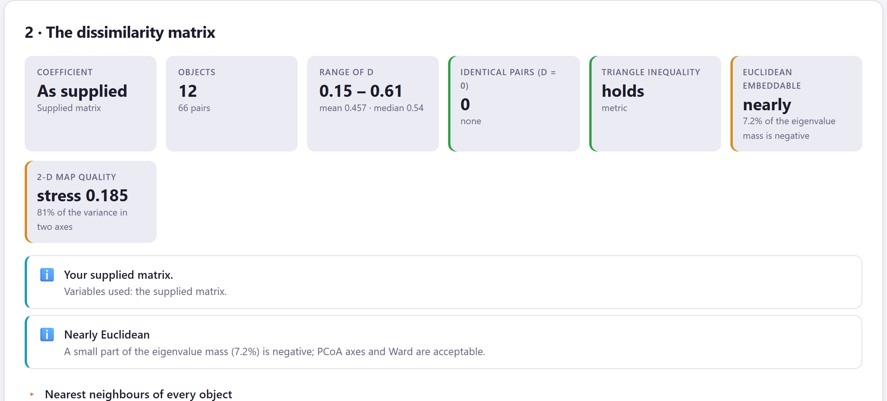
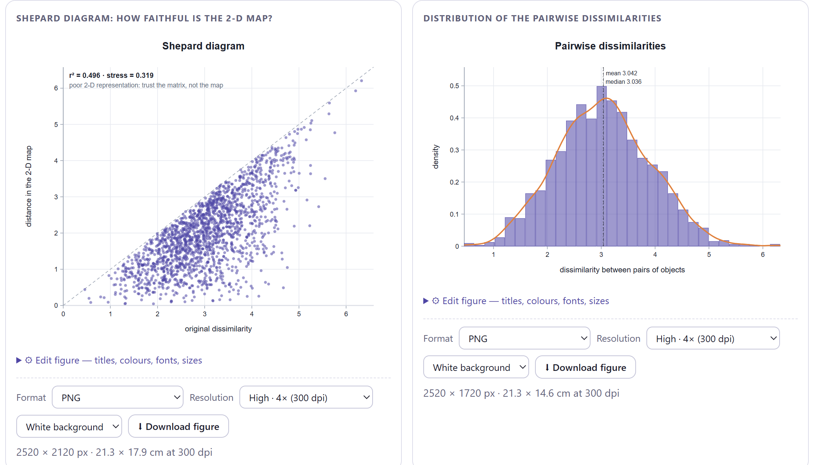
When there is real structure, reasonable coefficients agree because they all “see” the same gaps between clusters; disagreement appears only in the details. Without structure, each coefficient ranks the pairs in its own way and the matrices are weakly correlated: there is nothing to see, and each one makes up something different. That is why a comparison with low correlations is not only a warning about the choice but also a second signal (after the Hopkins statistic) that there may be no clusters. The distribution of dissimilarities confirms it: a single peak, with all pairs at similar distances.
In the methods section: the coefficient (with its parameter, if any), the data it was computed on (standardised working matrix, raw counts, declared binary variables), whether it is metric and Euclidean and, if you made a comparison, the minimum correlation between candidates. One sentence is enough: “The Bray–Curtis distance was computed on the raw abundances (metric, nearly Euclidean: 4.1% negative mass); Ružička, Morisita–Horn and Hellinger produced matrices correlated with it above 0.96.” The automatic paragraph in Block 8 writes it with your values.
With the dissimilarity matrix computed and diagnosed, the next chapter uses it to build the trees: the eight linkage rules and the divisive method, cophenetic correlation, how to cut the tree, the dendrogram studio with all its drawing options, the heat map with trees and the comparison of linkages by means of tanglegrams.